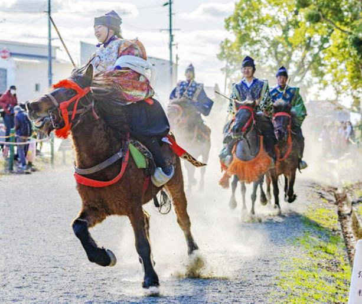
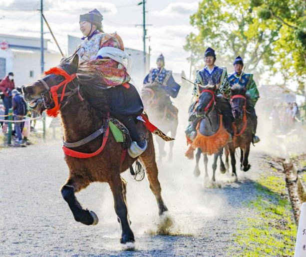

賀茂神社境内馬場にて、日本の馬と和式騎乗法による、流鏑馬やくらべうま(日本の古式競馬)を はじめとした「馬上武芸奉納まつり」を実施いたしました。
 

★馬上武芸奉納まつりスケジュール(予定)★
※例年のスケジュールより全体に早める予定となっています。
10：30～
流鏑馬奉納
11：15～
馬上武芸演武
12：00～
くらべうま出走準備
14：30
くらべうま終了予定
令和2年度(2020年度)の馬上武芸奉納まつりは規模を縮小し無観客にて実施いたします。
※無観客開催につき駐車場の用意等行っておりませんのでご注意ください。

当牧場では皆様に馬に触れてもらう様々な体験を設けています。
琵琶湖外乗(経験者向け)
料金目安 2時間：15,000円
3時間：25,000円
琵琶湖の砂浜や、湖岸の神社などを回るコースです。 コース内容は参加いただく方の騎乗経験などによりアレンジさせていただきます。 事前にご相談いただければ、冬季以外は馬と一緒に湖水浴も可能です。 一日の受付け上限人数は3名程度です。
流鏑馬スクーリング（一日）
15,000円
高校生以上を対象に、初めての方でも馬のコントロールと弓の実射を 体験できる少人数レッスンを一日かけて実施します。 乗馬が初めての方以外は、和鞍(日本の鞍)使用となります。 一日の受付け上限人数は4名程度です。
乗馬体験・神社参拝
お散歩コース
大人・子ども共通 １時間 4,000円
初めての方から経験者の方まで、お客様それぞれに合わせた乗馬のレッスンを行います。 お子様や初めての方はウェスタン鞍で、経験者の方は和鞍でのレッスンも可能です。
・コースにより年齢制限や参加人数上限の設定があります。ご注意下さい。 ・各コース料金には、ヘルメットや弓、矢などの各種道具類の貸出し料金が含まれています。 ・引き馬以外のコースでは、別途保険料がかかります。以下から選択ください。 一日限りの保険：500円 一年単位の保険：2,000円程度(ご希望内容により異なります) ・流鏑馬スクーリングや琵琶湖外乗など一日もしくは数時間単位で体験するコースに 参加される方は、近江八幡駅まで送迎の対応もいたします。事前にご相談ください。


A: 日本の馬と日本の馬文化が大好きな牧場主が立ち上げた牧場です。 日本の馬の活用に以前より取り組んできた紅葉台木曽馬牧場の協力を得ながら、 同じ馬好きの仲間たちと共に、日本の馬のよさを皆さまに知っていただきたく様々な活動をしています。 馬に乗っていただくには基本予約をしていただく形になりますが、 馬とスタッフが空いていれば予約がなくてもご案内可能ですのでお気軽にお声がけください。 お馬さんを見にきたり、にんじんをあげる餌やり体験は開場時間中ならいつでもOKです。
A：高校生以上であれば、乗馬の経験がなくても 流鏑馬やお散歩(※コース準備中)など、 いろいろな乗馬を体験できるコースに参加いただけます。 また、お子さまが乗っていただけるコースとして、 引き馬や、「やぶさめたいけん」などをご用意しました。
A：現在、競馬で走っている馬たちは「サラブレッド」といって速く走るために改良された種類の馬です。 体はとても大きく(肩のまでの高さで160cm以上)、スレンダーで脚の長い、いわば“アスリート”。 アスリートゆえに繊細な面も持ち合わせているので、 競馬場や乗馬クラブなど、馬専門の設備で飼育されます。 一方、日本の馬は「木曽馬(きそうま)」や「北海道和種(ほっかいどうわしゅ)」などが有名で、 どれも体は小柄(肩までの高さ1２0ｃｍから140ｃｍ程度)です。 最近は数が減ってしまい種の存続の危機に立たされていますが、 適応力が高く、丈夫で扱いやすい大きさなので、 かつては民家でも家族の一員として普通に飼われているような、身近な存在でした。
A：現代の日本で一般的な「ブリティッシュ」や「ウェスタン」のどちらとも違う、 日本の古式の馬具を使って乗るのが特徴です。 道具が違うので、乗り方、指示の出し方もやはり異なります。 日本式の乗り方は、馬に乗ったまま戦ったり、狩りをしたりするために発展したものなので、 馬への指示を最小限かつ効率的に伝え、 馬と騎乗者の双方が自在に動けることに重点が置かれます。
A：よほどの大雨や暴風など、危険と判断される場合以外は雨でも騎乗自体は可能です。 ただ、カッパ等の雨具はサイズの問題などもあるので各自で用意いただいています。 小さなお子様がいる場合など、悪天候の中乗るのはちょっと心配…という方は、 天候やその他の理由で事前キャンセルいただいた場合、キャンセル料はかかりませんので はやめにお知らせくださいませ。
A：１～２時間程度の短時間の体験であれば、動きやすい、また体温調節のしやすい服装で来ていただければＯＫです。 長袖、長ズボン(ジーンズでもＯＫ)にスニーカーといったスタイルの方が多いです。 弓矢やヘルメット等はお持ちでしたらご持参いただいても構いませんが、 貸出しで対応できますので、なくても大丈夫です。 一日コースの場合は、騎乗の際に必ず「和鐙」を使用します都合上、 乗馬用のブーツなど"かかとの高い靴"、”ヒールのある靴”は不向きです。 スニーカー、ズック靴、足袋や足袋靴など底の平らな靴をご用意ください。 乗馬経験者の方は、普段の乗馬用の服装に靴だけスニーカー（上からチャップス着用）にすることが多いです。 気合いをいれて、道着袴や装束などを持参し、実際着用してレッスンを受ける方もいますよ！ また、一日コースはお昼休憩をはさみますが、昼食は持参いただいても、いただかなくてもどちらでも構いません。 (持参でない場合は近くのお店にご案内しています)。
電車でお越しの方：最寄り駅→東海道本線 近江八幡駅
お車でお越しの方：名神高速道路 竜王インターから約15分